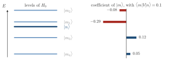
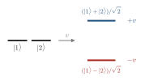

Advanced Quantum Materials 2027 · All lectures · Lecture notes
Session 9. Excitations and Defects in Quantum Materials
9.3 Linear response and perturbation theory in detail
Let us now build the quantum version of this idea, since everything that follows is based on it. We split the full Hamiltonian into an unperturbed part \(H_0\), which can be a metal, a superconductor, a quantum magnet or any system that we study, and a perturbation \(V\). We also add a coupling constant \(\lambda\) that helps us keep track of the orders, and at the end we will set it to one.
\[H(\lambda) = H_0 + \lambda V, \qquad \lambda = 0 \;\text{(pristine)}, \quad \lambda = 1\;\text{(full perturbation)}. \tag{9.2}\]
Every observable of the system, such as energies, densities, magnetizations and the wavefunctions themselves, becomes a function of \(\lambda\) once we fix \(H(\lambda)\). If this function is smooth enough to make a Taylor expansion around \(\lambda=0\), and later we will see when this assumption fails, then for any observable \(A\) we have
\[A(\lambda) = A^{(0)} + \lambda\, \chi_A + O(\lambda^2), \qquad \chi_A \equiv \left.\frac{\partial A}{\partial \lambda}\right|_{\lambda=0},\]
and by definition \(\chi_A\), the first-order coefficient, is the response function that we have been talking about in this session. To compute \(\chi_A\) for a generic observable, we first need the perturbed wavefunctions. We expand an unperturbed eigenstate \(|n\rangle\) of \(H_0\), with energy \(E_n^{(0)}\), in the full basis \(\{|m\rangle\}\) of \(H_0\). Standard Rayleigh-Schrödinger perturbation theory then gives, to first order in \(\lambda\) and away from any degeneracy,
\[|n(\lambda)\rangle = |n\rangle + \lambda \sum_{m \neq n} \frac{\langle m|V|n\rangle}{E_n^{(0)} - E_m^{(0)}} \, |m\rangle + O(\lambda^2). \tag{9.3}\]
The structure of (9.3) is the basis of every derivation in the rest of this session. A perturbation mixes a state \(|n\rangle\) with every other state \(|m\rangle\). The weight of the mixing is the matrix element of \(V\) between the two states, and it is suppressed by the inverse of the energy gap between them. States that are close in energy mix strongly, and states that are far apart in energy almost do not mix. Once we have (9.3), we can write any observable, in particular any density or magnetization, to first order in \(\lambda\) by using the perturbed states.

A state \(|n\rangle\) is coupled by \(V\) to two other states with the same matrix element. One of them is \(0.1t\) away in energy and the other is \(1.0t\) away. How do the two mixing coefficients of (9.3) compare?
Show the answers
- A. ✓ True
This is true. The coefficient is \(V/(E_n-E_m)\). For \(V=0.01t\) it is \(0.1\) for the state at \(0.1t\) and \(0.01\) for the state at \(1.0t\), which is a factor ten.
- B. ✗ False
This is false. The matrix element is the same, but the denominator is not. For \(V=0.01t\) the two coefficients are \(0.1\) and \(0.01\), so they differ by a factor ten.
- C. ✗ False
This is false. The energy of the far state enters only through the denominator. With \(V=0.01t\) the state at \(1.0t\) gives \(0.01\), which is smaller than the \(0.1\) of the state at \(0.1t\).
Two levels of \(H_0\) are exactly degenerate and \(V\) couples them. What happens to the first-order coefficient of (9.3) between them?
Show the answers
- A. ✗ False
This is false. Take \(H_0=0\) and a coupling \(v\) between the two levels. The eigenstates are \((|1\rangle\pm|2\rangle)/\sqrt2\) with energies \(\pm v\), so the levels mix completely.

Two degenerate levels coupled by \(v\) split into \(\pm v\), and the new states are the equal mixtures of the two. - B. ✓ True
This is true. If the levels are split by \(\delta\), the coefficient is \(v/\delta\). For \(v=0.01t\) and \(\delta=10^{-4}t\) it is \(100\), which is meaningless for a small correction, and it grows without bound as \(\delta\to0\).
- C. ✗ False
This is false. The matrix element is finite, but the coefficient is its ratio to the energy difference. For two levels split by \(10^{-4}t\) and \(v=0.01t\) the ratio is \(100\), so it is not finite as the splitting goes to zero.
When does this break down? The construction in (9.3) assumes that \(A(\lambda)\) is an analytic function of \(\lambda\) close to \(\lambda=0\), and this assumption is not always true. There are three paradigmatic quantum states that are known to be intrinsically non-perturbative in this sense, and we mention them explicitly since they mark the limit of everything that we derive below. We met the same three cases in Section 3.3.
An impurity in a metal, the orthogonality catastrophe. In the thermodynamic limit, the many-body wavefunction of a metal with the impurity becomes exactly orthogonal to the one without it. This happens for any strength of the impurity potential, even a very weak one.
A quantum spin in a metal, the Kondo effect. The Kondo temperature that emerges is non-perturbative in the Kondo coupling. It has an essential singularity in the coupling constant and not a power series, and Section 8.11 treats the Kondo impurity in full.
Superconductivity in the BCS limit. In the same way, the superconducting gap of Session 5 is non-perturbative in the attractive coupling constant.
In the rest of this session we stay in the regime where perturbation theory does work, which is the regime where (9.2) and (9.3) give a controlled and systematic way to compute responses.
- In Section 9.4 the mixing of (9.3) for a Fermi sea gives the Lindhard function.
- In Section 9.5 the random phase approximation sums the interaction to all orders, which goes beyond the first order of this page.
- In Section 9.6 a weak impurity in a metal is treated at first order, in the Born approximation, and gives the Friedel oscillation.